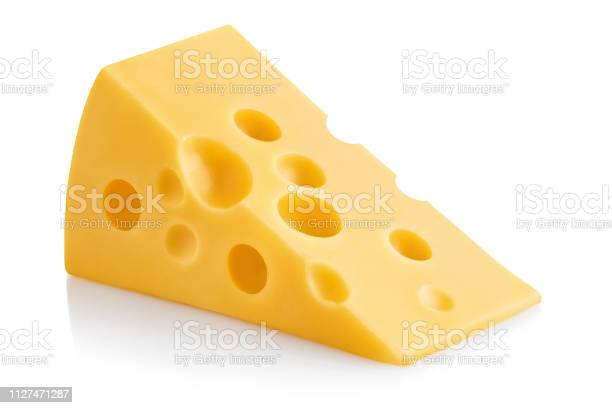
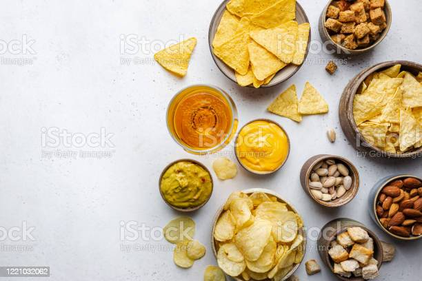
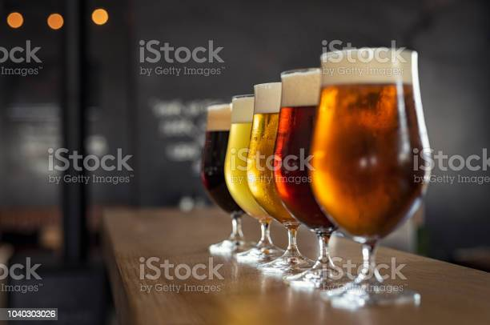
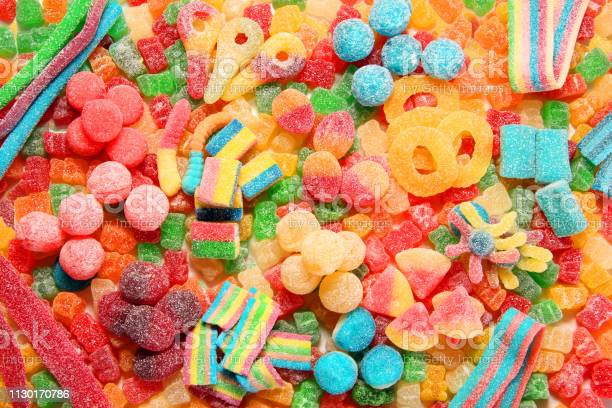

Nuestros Productos

El Gruyère es un queso suave, fabricado con leche de vaca y cuajo triturado. Su sabor varía mucho dependiendo del tiempo de maduración al que se le someta

Los snacks, son productos elaborados a partir de cereales como el arroz, el trigo o el maíz. Encontra la mayor variedad y al mejor precio.

Los ingredientes esenciales para hacer cerveza son cuatro: agua, malta, lúpulo y levadura. Cada uno de estos cuatro ingredientes tiene su objetivo y todos aportan características para hacer de la cerveza una bebida única. Encontra la mayor variedad a la menor temperatura y precio!!

Gomitas, bananitas, rocklets y muchisimas mas variedades de caramelos y todo tipo de golosinas!! Dejate tentar